| 日付 | 2026年11月21日（土） - 2026年11月22日（日） | ||||
|---|---|---|---|---|---|
| 山域 | 駿河・身延 | ||||
| メンバー | 家族（妻） | ||||
| 山行形態 | 1泊2日小屋泊 | ||||
| アクセス | 電車、タクシー、バス | ||||
| ルート (Map) |
|
2010年に七面山に登る計画を立てて雨で流れてしまった。
それから16年、ようやく訪問の機会を得る。
以前から、七面山～八紘嶺の稜線が気になっており、このルートを歩くことにする。
このルートだと車が使えず、公共交通機関も不便なのだが仕方がない。
1日目
特急ふじかわに乗って移動。3連休の影響か、結構人が多い。
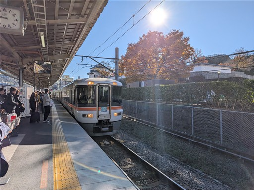
車窓からは富士山が見える。手前の山がちょっと邪魔だ。
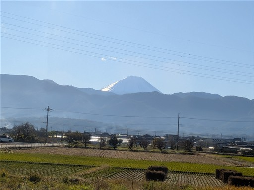
下部温泉駅に到着。2007年に毛無山に登ったときに下りてきた懐かしい場所だ。
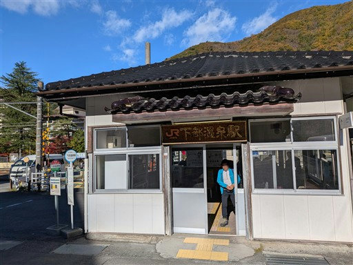
タクシーで登山口まで移動。思ったより山奥だ。
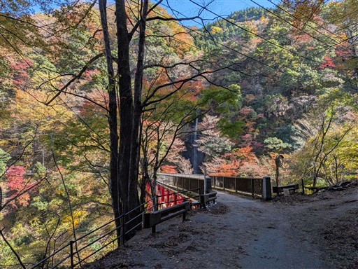
駐車場はもう一杯。
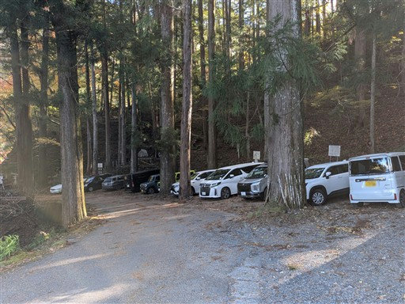
まずは羽衣白糸の滝を見学しに行く。
形の特徴はあまりないが、そこそこ立派な滝で紅葉が美しい。
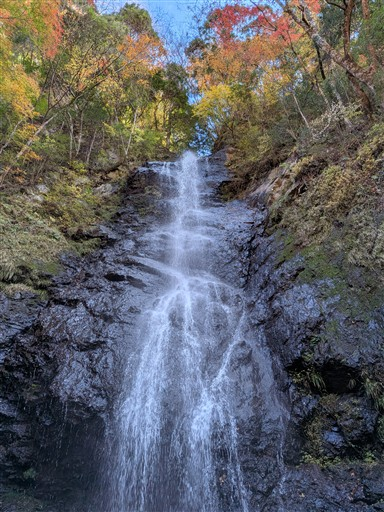
弁天堂まで徒歩3分と書かれているため、寄ってみることにする。
周囲は紅葉が美しい。
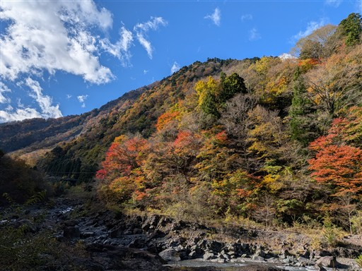
弁天堂に到着。ちょっと3分で着くのは難しい。
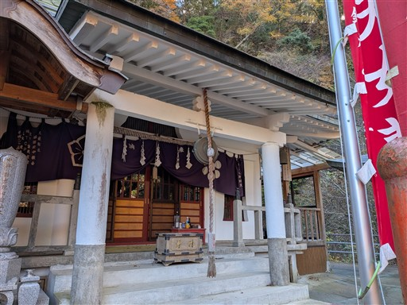
側にある勇姿の滝。白糸の滝を一回り小さくした感じ。
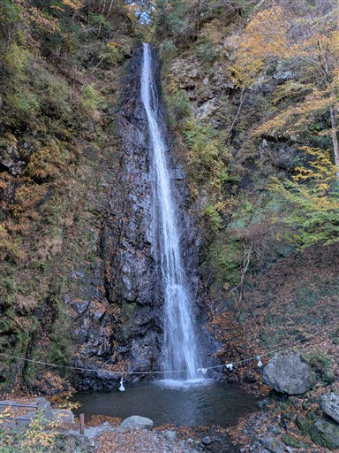
鐘があるので一突き。
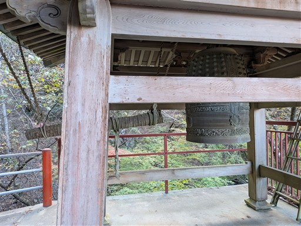
白糸の滝に戻ってくる。像はお万の方。
徳川家康の側室で七面山の女人禁制を解いた人だ。
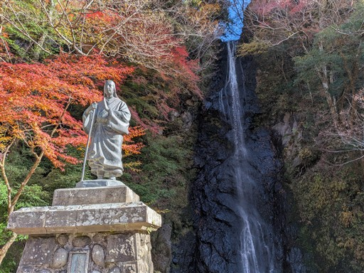
観光を終えたら登山開始。登山口に立派な門がある。
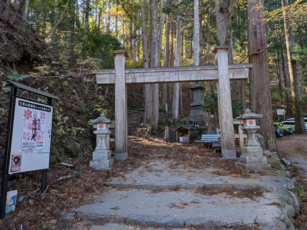
とても歩きやすい登山道。このような道が山頂まで続く。
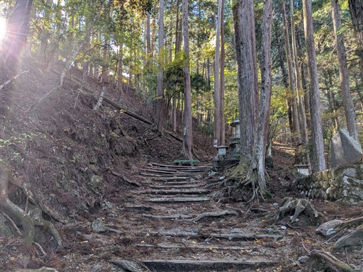
歩き始めてすぐに神力坊に到着。
この山は信者の方が登るので、ところどころでこういった休憩ポイントがある。
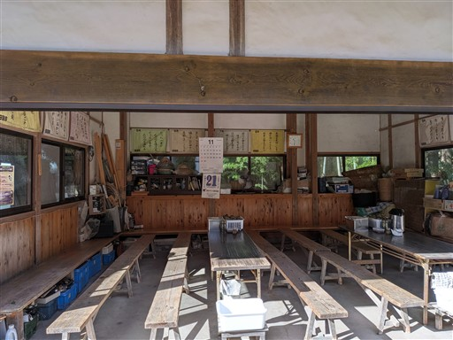
ところどころ、大きな杉が見られる。
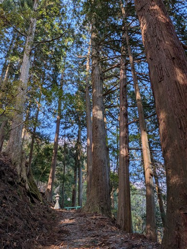
丁目が書かれた灯篭が定期的に立っている。
バス停のような休憩所も多いが、傷んでいるものが多い。
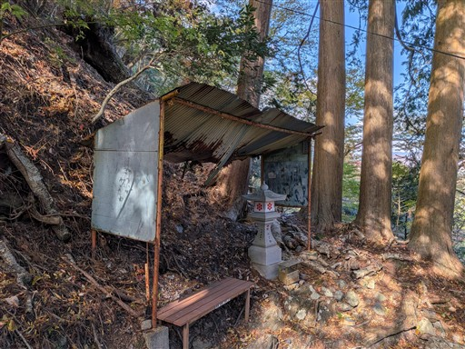
ところどころで紅葉が見られるが、代替は針葉樹林帯だ。
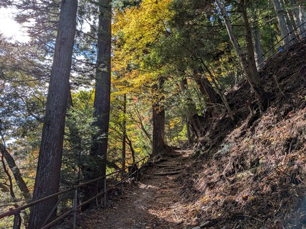
肝心坊に到着。ここには売店がある。
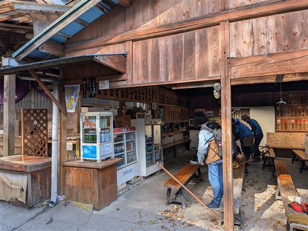
灯篭の並ぶ杉の道が続く。
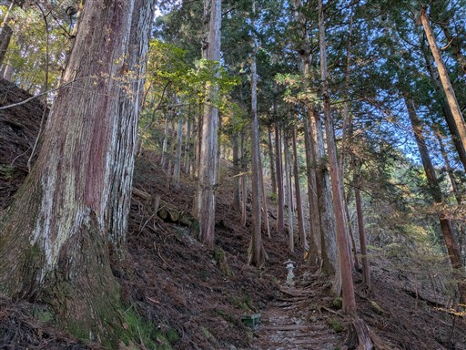
中適坊。寄進者の木札が所狭しと並んでいる。ここで昼食休憩を取る。
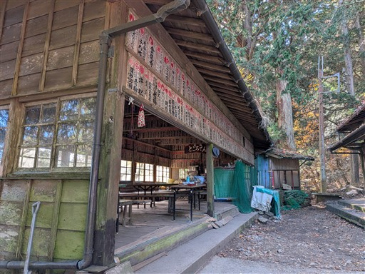
巨大な瘤を2つ持った木。
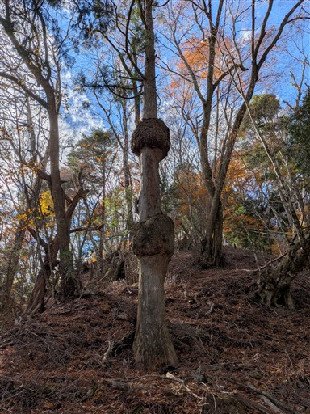
すぐ近くに聳えているのは毛無山。
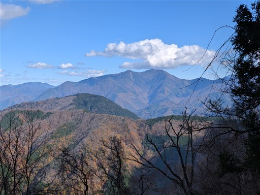
周辺にチラホラと雪が現れだす。
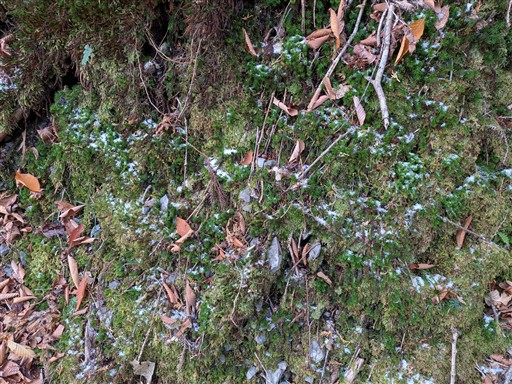
晴雲坊を通過。
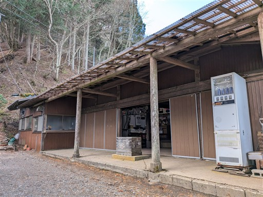
南無妙法蓮華経と唱えながら太鼓を叩いて登っている信者の方がいる。
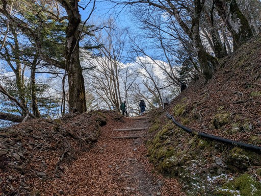
荷物運搬用のロープウェイが稼働している。
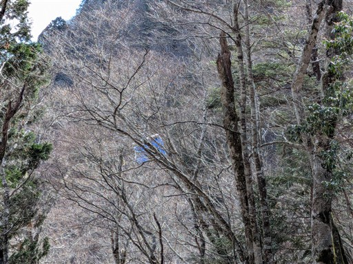
立派な和光門が現れる。ここからは神域だ。
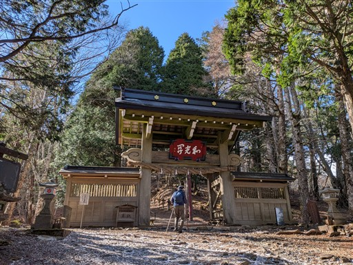
山門からは整然と杉が並ぶ道になる。
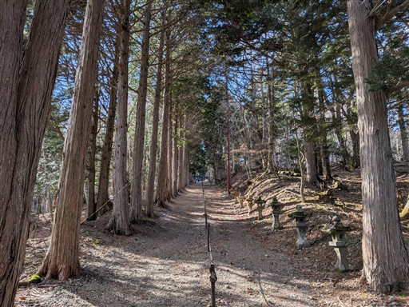
敬神院の近くまで上がってくる。鐘があり、自由に突くことが出来そうだ。
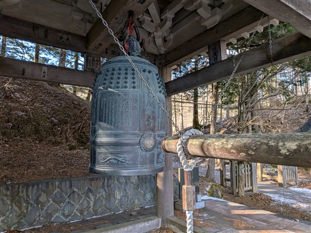
鐘の下にも穴が開いている。この方が音が反響するのだろうか？
初めて見る仕掛けだ。
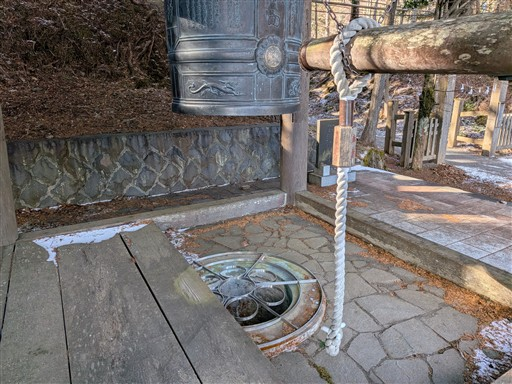
吉祥門。ここが敬神院の入口。
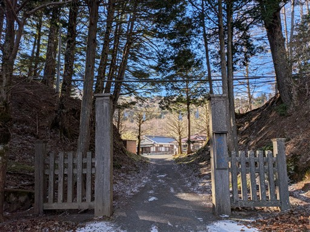
まず目を惹くのがサルオガセ。こんな見事な姿は見たことがない。
誰も注目していないのが不思議なくらい。
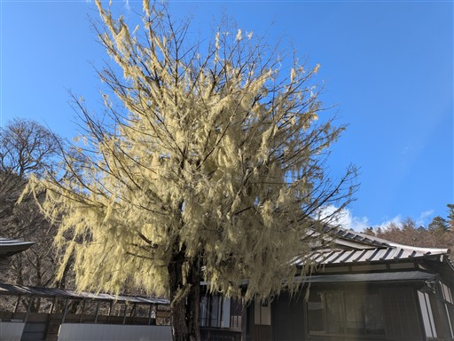
敬神院。建物がたくさん並んでいる。
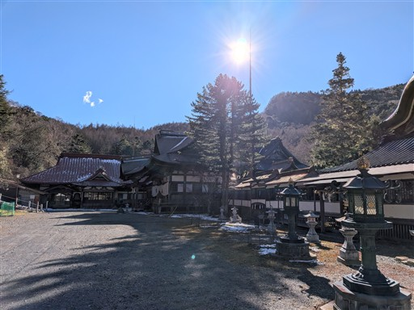
地面と廊下の立体交差になっている。
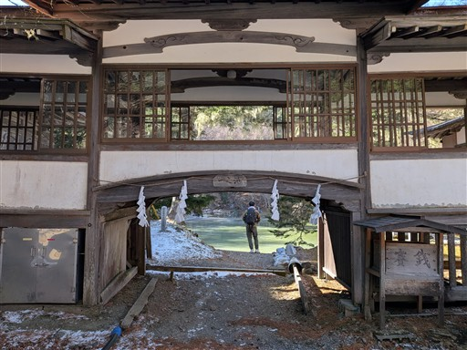
その先に広がるのは一の池。表面は凍り付いている。
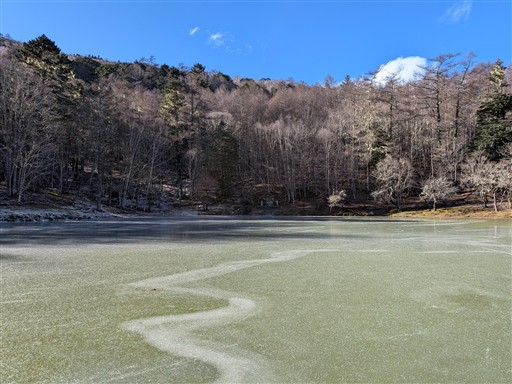
ホースが伸びている。ここから取水しているようだ。
この周辺は水が動くのか、ここだけ氷が張っていない。
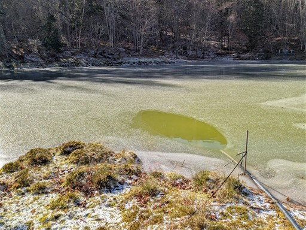
敬神院の本堂。
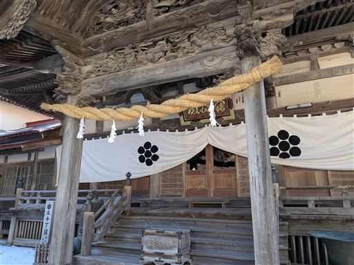
ここに五十丁目の石柱がある。
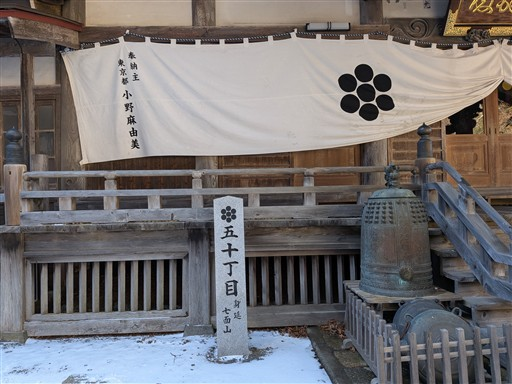
気温はマイナス2度。昼なのにかなり寒い。
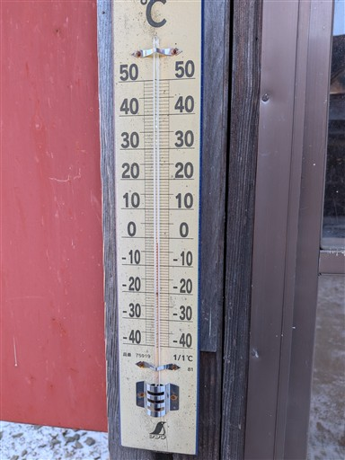
こちらが宿泊者の入口。
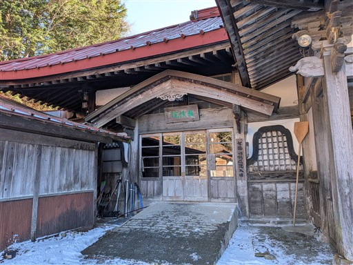
宿泊したのは「恩」という部屋。相部屋だ。
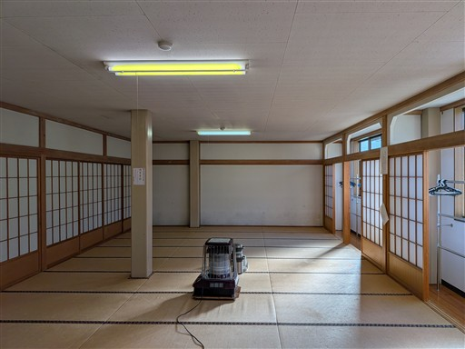
建物内の様子。廊下はピカピカ。グルッと一周探検してみる。
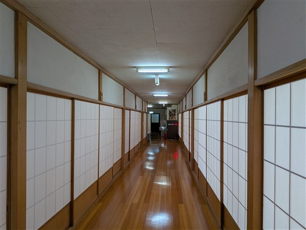
超巨大なやかん。
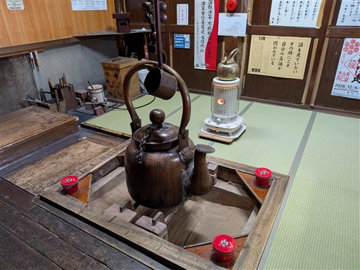
展望台に行って見る。本日は晴れているが、残念ながら富士山には雲がかかっている。
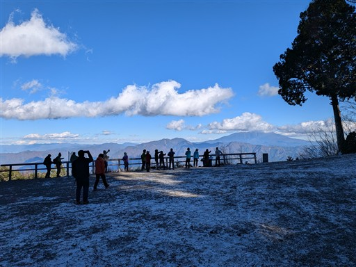
本堂から展望台に至る道。
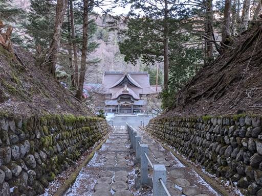
一時間後に行って見ると、山頂部は見えているが、中腹に雲がかかっている。おしい。
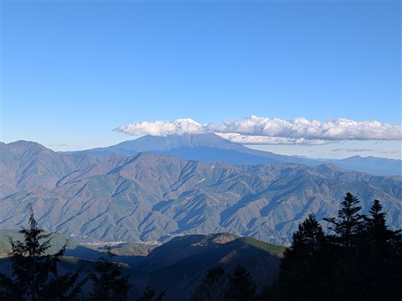
周囲はだいぶ暗くなってきた。
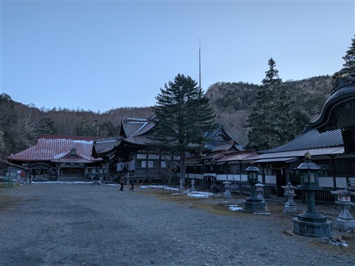
そして、45分後に再度訪れると、ついに富士山が姿を出している。3度目の正直だ。
随神門からちょうど富士山が望めるようになっている。
春分・秋分は富士山の上から太陽が昇り、随神門を抜けて本堂に陽の光が差し込むらしい。
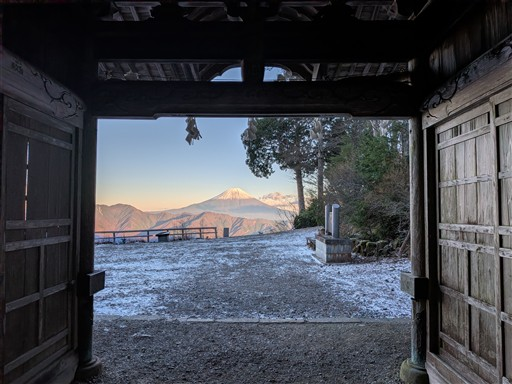
夕暮れの富士山を眺める。
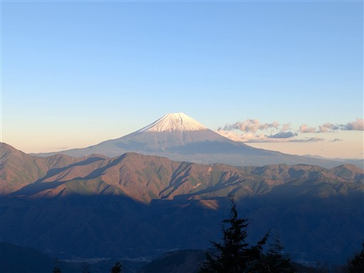
夕飯は質素。
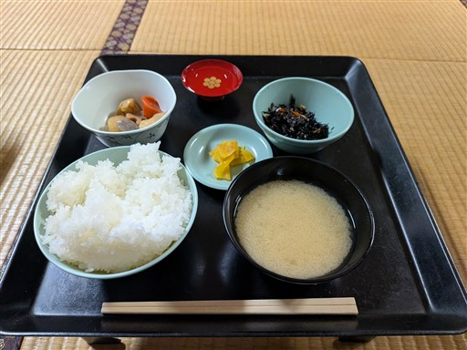
夕飯後は夕勤。本堂でお経を聞く。ここから先は撮影禁止。
部屋に戻る。複数名が一緒の長布団に入る独特のスタイル。